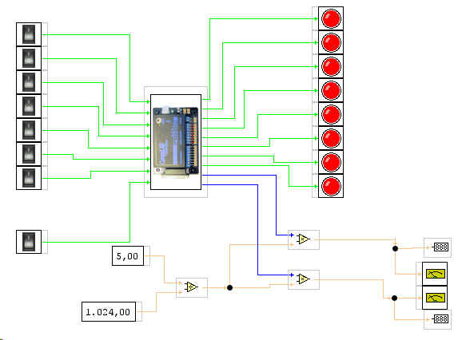
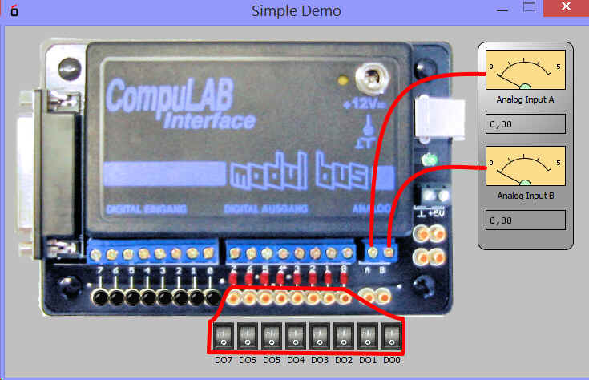

Módulo de interfaz de bus CompuLab (USB)
El módulo de interfaz USB CompuLab es un módulo de entrada / salida del módulo a un Bus.
Más información se puede encontrar en:
http://www.ak-modul-bus.de/
Entradas
8 digitales TTL 0..5V
2xADC (convertidor analógico a digitalde 10 bits(auföäsung 0..1023)) (0..5V)
Salidas:
8 x digitales

